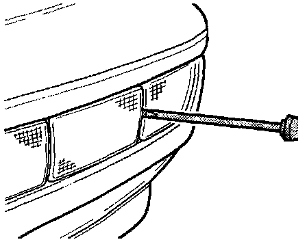
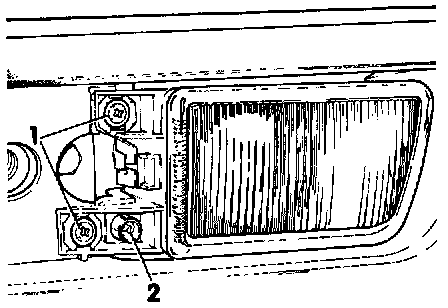

Fog/Driving Lamp: Service and Repair
NOTE: The front towing eye (lens) cover is larger on vehicles without fog lights than on vehicles with fog lights.
- Using screwdriver, carefully pry towing eye (lens) cover from turn signal housing retainer.
- Remove towing eye (lens) cover.

- Remove screws -1-. (-2- is for adjustment)
- Pull fog light housing from bumper and disconnect harness connector.
- Install in reverse order of removal.